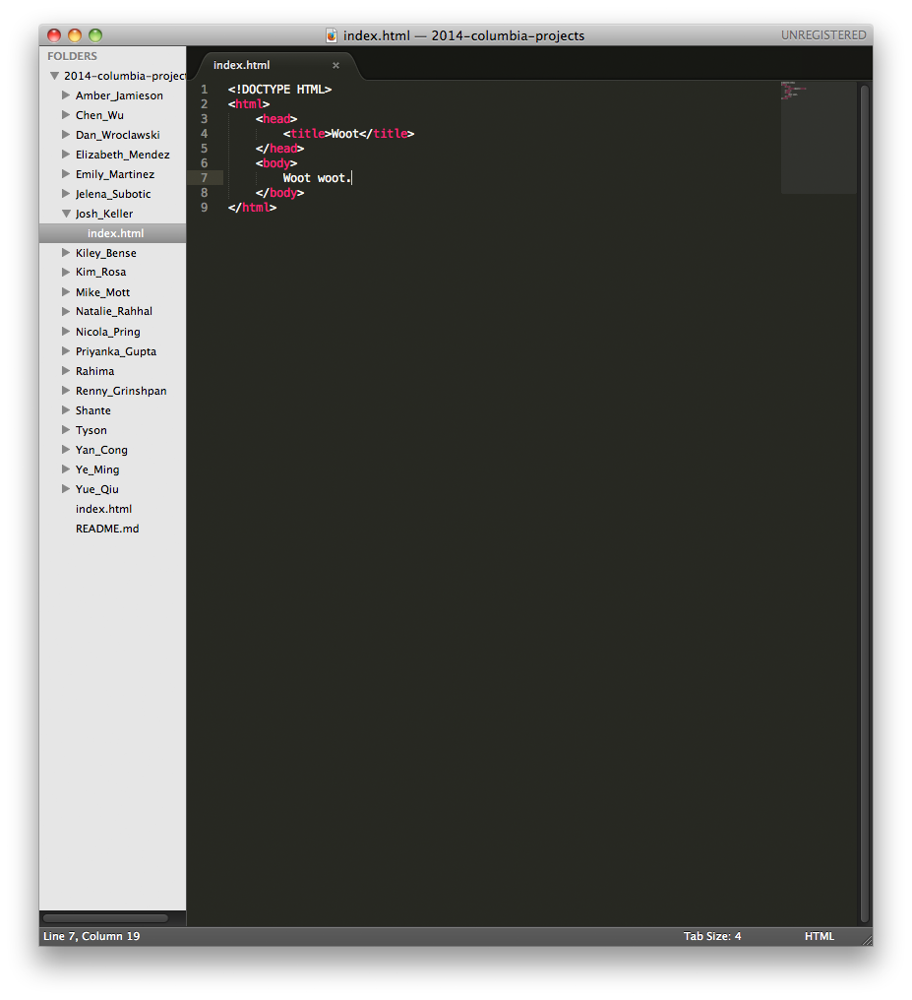
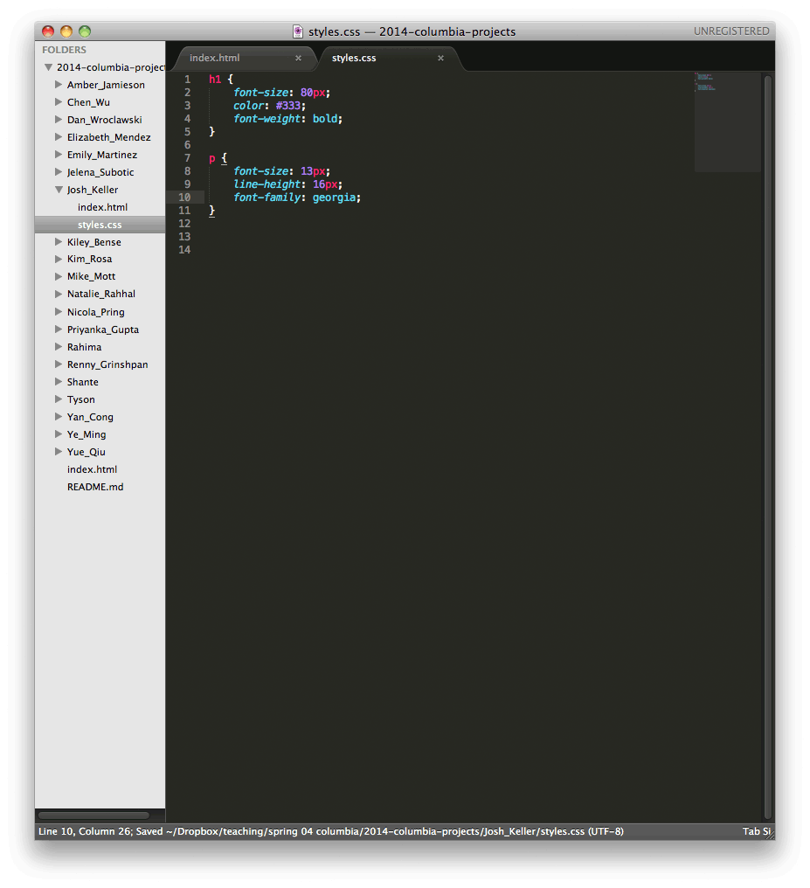
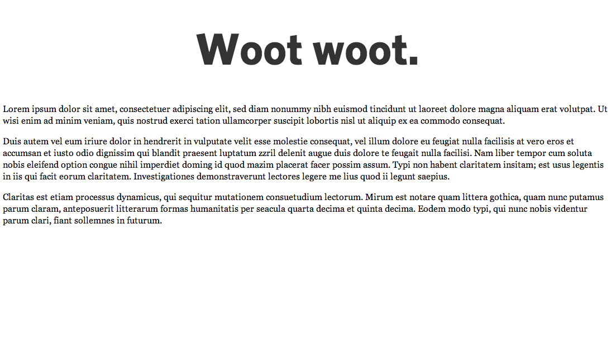

In this week's class, we went over the basics of CSS. This is a short guide to starting a CSS file and applying it to your HTML.
1. Start with an HTML file in your Sublime editor.
2. Create a new text file and add a few CSS rules like the ones below. Save the new file as 'styles.css' in the same folder as your HTML file. The CSS file extension lets the browser know that it's a CSS file.
3. In your index.html file, add the following <link> tag in the head portion of your file:
4. Open your HTML file in a web browser. (To do this, either drag the file from the Finder into the browser, or go to File > Open in the browser). Your HTML should be styled with the CSS. 